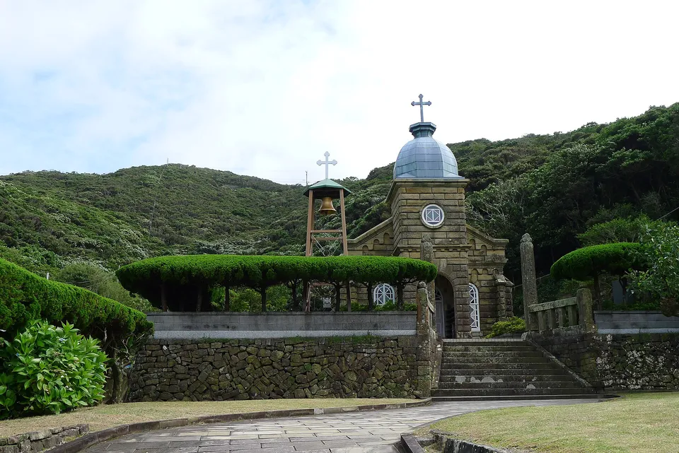
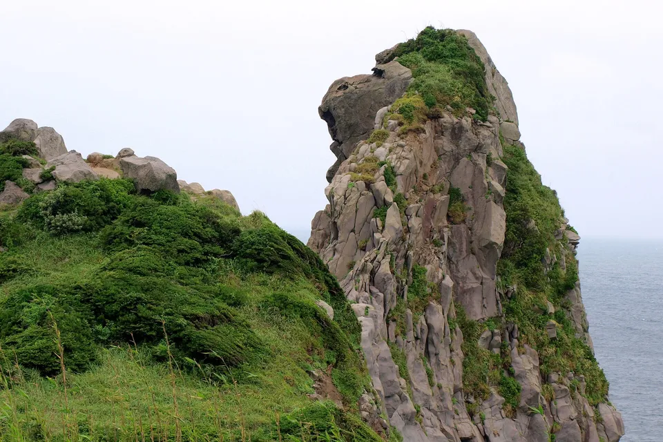
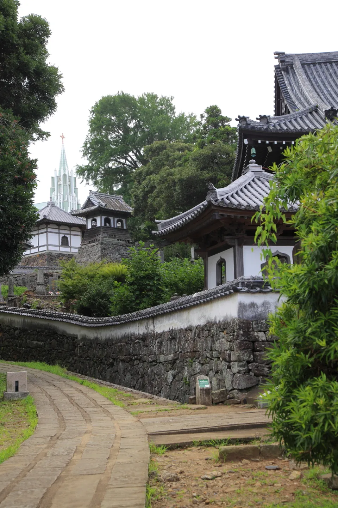

{kind=link}
Nagasaki has more inhabited islands than any other prefecture in Japan — 60 in this table — and they sort themselves into four groups a traveller can actually use: the Goto and their churches, Hirado behind its bridge, Iki an hour from Fukuoka, and Tsushima out toward Korea.
The Nagasaki slice of our national island table: same source, same numbers, grouped and with the boats explained.



Photos: Kashiragashima Church, one of the Gotō churches on the World Heritage list — Indiana jo via Wikimedia Commons, CC BY-SA 4.0 · Saruiwa, the monkey rock, on Iki — ぱちょぴ（投稿者）撮影 via Wikimedia Commons, CC BY-SA 3.0 · Hisakajima in the Gotō Islands, Nagasaki — houses, boats and one road — Indiana jo via Wikimedia Commons, CC BY-SA 4.0
{kind=link}
{kind=link}
{kind=link}
Why Nagasaki has so many
Nagasaki has more inhabited islands than any other prefecture — 60 in the SHIMADAS roster, a fifth of the national total — because its coast is nothing but peninsulas and bays and the Gotō, Hirado, Iki and Tsushima groups all lie off it. This page is the Nagasaki slice of our table of every inhabited island in Japan: same source, same columns, one prefecture, with the four groups pulled out because that is how you actually travel them.
The shape of it
Source: SHIMADAS (Japan Islands Center, 2019 edition), 2015 census and GSI figures; Nakadōri from ja.wikipedia (2010 census).
The four groups, and the rest
Nagasaki's islands come in four groups and a scatter, and they are not interchangeable — Iki is a day out from Fukuoka, Tsushima is a trip, the Gotō are a pilgrimage.
The Gotō Islands
Fukue (34,419 people), Nakadōri (20,167), Naru, Wakamatsu, Hisaka, Ojika, Uku and a dozen small ones, 100 km west of Nagasaki. Fifty churches from the "hidden Christian" centuries, several on the World Heritage list; a jet-foil from Nagasaki or a flight from Fukuoka.

Hirado
Hirado Island (17,876) is bridged to the mainland; behind it Ikitsuki, Azuchi-Ōshima and Takushima. The first Dutch and English trading post in Japan, and the church-behind-temple view that is on every poster.
{kind=link}
Iki
One big island (26,750 people, 135 km²) an hour by jet-foil from Fukuoka's Hakata port — beaches, barley shōchū, ancient burial mounds and a Yayoi-period settlement site.
Tsushima
Japan's biggest island outside the main four and Okinawa, 696 km² and 31,301 people, closer to Busan than to Fukuoka. Drowned valleys, the Tsushima leopard cat, and Korean day-trippers; a two-hour jet-foil from Hakata or a short flight.
The small ones
25 of Nagasaki's islands have fewer than a hundred residents — Hisakajima (pictured, 294) is one of the bigger of them. Boats a few times a day from Fukue or Nakadōri; nowhere to stay on most.
The table: all 60
Every inhabited island of Nagasaki Prefecture in the roster, grouped. Sort by people or size, or type a name. "Read more" links to the English Wikipedia article where we could verify one.
| Island | Group | People ▾ | km² ▾ | Read more |
|---|---|---|---|---|
| Fukue Island福江島 | Gotō | 34,419 | 326 | Wikipedia |
| Nakadōri Island中通島 | Gotō | 20,167 | 168 | Wikipedia |
| Naru Island奈留島 | Gotō | 2,246 | 24 | Wikipedia |
| Ojikajima小値賀島 | Gotō | 2,229 | 12 | |
| Ukujima宇久島 | Gotō | 2,179 | 25 | Wikipedia |
| Wakamatsu Island若松島 | Gotō | 1,402 | 31 | Wikipedia |
| Kuroshima黒島 | Gotō | 446 | 4.66 | |
| Ōshima大島 | Gotō | 399 | 0.40 | |
| Hisaka Island久賀島 | Gotō | 294 | 37 | Wikipedia |
| Terashima寺島 | Gotō | 203 | 0.78 | |
| Saganoshima嵯峨島 | Gotō | 134 | 3.16 | |
| Kabashima椛島 | Gotō | 129 | 8.68 | Wikipedia |
| Ōshima大島 | Gotō | 123 | 1.17 | |
| Arifukujima有福島 | Gotō | 112 | 2.97 | |
| Ōshima大島 | Gotō | 65 | 0.71 | |
| Kuroshima黒島 | Gotō | 63 | 0.82 | |
| Madarajima斑島 | Gotō | 54 | 0.24 | |
| Ōshima黄島 | Gotō | 41 | 1.39 | |
| Hinoshima日島 | Gotō | 38 | 1.39 | |
| Shimayamajima島山島 | Gotō | 31 | 4.70 | |
| Ryōzegaurashima漁生浦島 | Gotō | 30 | 0.65 | |
| Nōshima納島 | Gotō | 26 | 0.65 | |
| Maejima前島 | Gotō | 23 | 0.47 | |
| Shimayamajima島山島 | Gotō | 17 | 5.52 | |
| Kashiragashima頭ヶ島 | Gotō | 15 | 1.86 | |
| Wakamiyajima若宮島 | Gotō | 14 | 0.56 | |
| Akashima赤島 | Gotō | 14 | 0.51 | |
| Terashima寺島 | Gotō | 8 | 1.30 | |
| Kirinokojima桐ノ小島 | Gotō | 8 | 0.04 | |
| Maejima前島 | Gotō | 5 | 0.26 | |
| Nozakijima野崎島 | Gotō | 3 | 0.69 | |
| Kuroshima黒島 | Gotō | 2 | 1.12 | |
| Mushima六島 | Gotō | 1 | 7.11 | |
| Hirado Island平戸島 | Hirado | 17,876 | 163 | Wikipedia |
| Azuchiōshima的山大島 | Hirado | 1,077 | 15 | |
| Takushima度島 | Hirado | 701 | 3.57 | |
| Takashima高島 | Hirado | 382 | 1.23 | |
| Takashima高島 | Hirado | 181 | 2.67 | |
| Takashima高島 | Hirado | 22 | 0.25 | |
| Iki Island壱岐島 | Iki | 26,750 | 135 | Wikipedia |
| Nagashima長島 | Iki | 116 | 0.51 | |
| Harushima原島 | Iki | 100 | 0.53 | |
| Tsushima Island対馬島 | Tsushima | 31,301 | 696 | Wikipedia |
| Uni Island海栗島 | Tsushima | 64 | 0.09 | Wikipedia |
| Okinoshima沖ノ島 | Tsushima | 39 | 2.66 | |
| Okinoshima赤品泊島 | Tsushima | 13 | 0.58 | |
| Shiroze白瀬 | Bays & coast | 18,121 | 168 | |
| Ōshima大島 | Bays & coast | 5,185 | 12 | |
| Fukushima福島 | Bays & coast | 2,635 | 17 | Wikipedia |
| Takashima鷹島 | Bays & coast | 2,037 | 16 | |
| Kakinōrashima蛎浦島 | Bays & coast | 927 | 4.75 | |
| Makishima牧島 | Bays & coast | 810 | 1.62 | |
| Matsushima松島 | Bays & coast | 534 | 6.37 | |
| Kabashima樺島 | Bays & coast | 528 | 2.32 | Wikipedia |
| Tobishima小飛島 | Bays & coast | 205 | 0.90 | |
| Sakitojima崎戸島 | Bays & coast | 197 | 0.41 | |
| Ikeshima池島 | Bays & coast | 130 | 1.06 | Wikipedia |
| Enoshima江島 | Bays & coast | 124 | 2.59 | |
| Tobishima飛島 | Bays & coast | 44 | 0.50 | |
| Utajima詩島 | Bays & coast | 30 | 0.25 |
60 islands. Population and area are the figures printed in SHIMADAS (2019 edition; 2015 census and GSI), except Nakadōri, which the roster extraction missed and which carries its 2010 census figure from the Japanese Wikipedia. Groups are ours; several small islands with the same name (Ōshima, Takashima) could not be told apart in the source and sit under "Bays & coast".
The Japanese you'll actually use
Common questions
How many islands does Nagasaki have?
The prefecture claims the most islands in Japan; 60 of them are inhabited according to the SHIMADAS roster used here, 25 with fewer than a hundred people.
Which Nagasaki island should I visit?
Iki for a day trip from Fukuoka (beaches, shōchū, easy). The Gotō — Fukue and Nakadōri — for the churches and a slower week. Tsushima if you want scale and wildlife and do not mind two hours on a boat. Hirado if you have a car and a day.
How do I get to the Gotō Islands?
Jet-foil from Nagasaki port to Fukue (about 1 h 25 min) or car ferry (about 3 h); flights from Fukuoka and Nagasaki to Fukue; a ferry from Sasebo to Uku, Ojika and Nakadōri. Timetables are on the operators' sites in Japanese.
Are the population figures current?
They are the 2015 census as printed in the 2019 edition of SHIMADAS (Nakadōri: 2010, from the Japanese Wikipedia). All of these islands have fewer people now.
Read next
Sources: SHIMADAS (Japan Islands Center, 2019 edition) for the roster and figures (2015 census, GSI); Nakadōri from the Japanese Wikipedia (2010 census, infobox area) because the roster extraction missed it. Only published figures are reproduced, no text. English article links verified by prefecture; a blank means unverified, not absent; several same-named small islands could not be told apart and carry no link. Photos are Creative Commons — credits under each image.